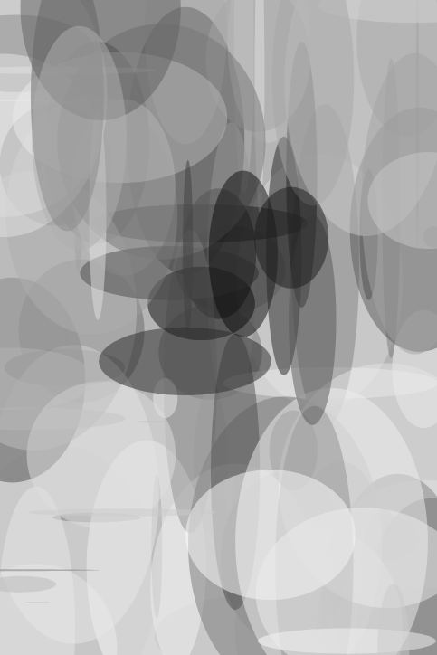

Experiment 5 - Evolutionary Impressions
Mutation rate (%):
Active score:
Exploration rate: fps
Best score:
Description
This is an impressionism generator using a lot of ChatGPT to create images using ellipsies.
Using various images from Pexels, I was able to create the various images using procedural ellipse generation.

Technical
Creating the functions we needed to create our impressionism was done through ChatGPT and through many hours of struggling. The photos are loaded in as an array, which are then passed to an initialize function, that randomly pushes different circle values. Then the renderer function draws those circles based on the parameters, which then in turn is mutated based on the slider rate.Reflection
This was difficult to implement since I was sick and couldn't attend lecture. This is where ChatGPT came in help with some of the function creation. It was definitely a struggle to try and figure out what and where the circles were gonna be generated but through a lot of tweaking I was able to generate the ellipsies based on the image and a lot of randomization functions!